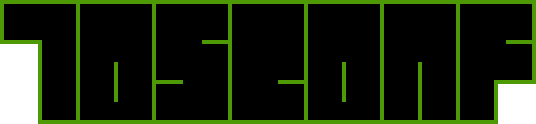
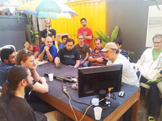

18 de Março de 2023
09:00
Campinas - SP
O Evento
A Tosconf é uma desconferência anual organizada pelo Laboratório Hacker de
Campinas (LHC). Devido a pandemia de COVID-19 tivemos que adiar a quarta edição em
2020, mas este ano estamos de volta presencialmente.
O conteúdo da Tosconf é eclético; não há praticamente nenhuma restrição sobre os temas
e tipos de atividades que podem ser apresentados (desde que não viole o nosso
Código de
Conduta).
Em anos anteriores contou com a presença de pessoas dos mais variados meios e vivências, de
computação à artesanato, de segurança da informação à marcenaria, profissionais e curiosas,
e, às vezes, até mesmo figuras míticas da computação.



 © Bruno Dilly
© Bruno Dilly

 © Bruno Dilly
© Bruno Dilly

 © Bruno Dilly
© Bruno Dilly
Organização
A Tosconf[3] é organizada por pessoas voluntárias, associadas ou
não ao Laboratório Hacker de Campinas. Para organizar um evento como esse
precisamos de ajuda para tarefas como:
- Organizar a chamada de trabalhos (divulgação, avaliação e preparação da agenda);
- Preparar o espaço físico do LHC no dia do evento;
- Controlar as inscrições;
- Fazer orçamentos e eventualmente comprar brindes, alimentos e bebidas;
- Divulgação em redes sociais e comunidades;
- Outras tarefas que vão surgindo antes, durante e depois do evento.
Se você se interessou e quer ajudar em um (ou mais) dessas tarefas, preencha o formulário no
link a seguir que entraremos em contato e assim poderemos dividir melhor as tarefas para não
sobrecarregar ninguém da organização.
QUERO SER UMA PESSOA VOLUNTÁRIA E AJUDAR A ORGANIZAR A TOSCONF[3]
Chamada de Trabalhos
tl;dr
Preencha este formulário para submeter sua proposta
A chamada de trabalhos começa dia 2023-01-18 e estende-se até 2023-03-01. Dependendo das submissões, teremos espaços separados para palestras, oficinas, tutoriais e outras atividades paralelas. A Tosconf é uma conferência eclética: não há qualquer restrição do tipo de coisa que pode ser abordada nas atividades, mas as áreas seguintes são de interesse, principalmente a última, "Etc":
- Retrocomputação, cultura de vídeo game e arte
- Criptografia e criptoanálise
- Privacidade
- Jogos de Tabuleiro
- Marcenaria
- Educação e novas maneiras de ensinar e aprender
- Lockpicking esportivo
- Culinária, fabricação de bebidas
- Exploração espacial amadora
- Fabricação: tecnologias, ferramentas, distribuição
- Eletrônica, robótica, automação
- Dados Abertos
- Mecânica
- Neutralidade de rede e dispositivos
- Técnicas inusitadas de exploração de falhas
- Linguagens de programação: estado da arte, pesquisa
- Transparência e participação política/governamental
- Engenharia reversa, análise forense
- Tecnologia e leis
- Radioamadorismo, segurança de telecomunicações, SDR
- Internet das Coisas (IoT)
- Qualquer combinação das sugestões de tópicos anteriores
- Etc.
Inscrições
EM BREVE MAIS INFORMAÇÕES PARA INSCRIÇÕES!
Edições Anteriores
Confira a agenda das edições anteriores seguindo os links abaixo:
Organização |
 |
|
 |